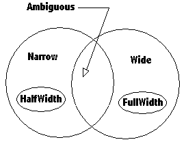
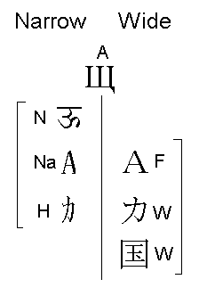

| Version | 4.0.1 |
| Authors | Asmus Freytag (asmus@unicode.org) |
| Date | 2004-03-08 |
| This Version | http://www.unicode.org/unicode/reports/tr11/tr11-13.html |
| Previous Version | http://www.unicode.org/unicode/reports/tr11/tr11-11.html |
| Latest Version | http://www.unicode.org/unicode/reports/tr11/ |
| Tracking Number | 13 |
This report presents the specifications of an informative property for Unicode characters that is useful when interoperating with East Asian Legacy character sets.
This document has been reviewed by Unicode members and other interested parties, and has been approved by the Unicode Technical Committee as a Unicode Standard Annex. This is a stable document and may be used as reference material or cited as a normative reference by other specifications.
A Unicode Standard Annex (UAX) forms an integral part of the Unicode Standard, but is published as a separate document. The Unicode Standard may require conformance to normative content in a Unicode Standard Annex, if so specified in the Conformance chapter of that version of the Unicode Standard. The version number of a UAX document corresponds to the version number of the Unicode Standard at the last point that the UAX document was updated.
Please submit corrigenda and other comments with the online reporting form [Feedback]. Related information that is useful in understanding this document is found in the References section. For the latest version of the Unicode Standard see [Unicode]. See [Reports] for a list of current Unicode Technical Reports. For more information about versions of the Unicode Standard, see [Versions].
When dealing with East Asian Text there is the concept of an inherent width of a character. This width takes on either of two values: narrow or wide. For traditional mixed-width East Asian legacy character sets this classification into narrow and wide corresponds with few exceptions directly to the storage size for each character: a few narrow characters use a single byte per character and all other characters (usually wide) use two or more bytes.
Layout and line breaking (to cite only two examples) in East Asian context show systematic variations depending on the value of this East-Asian Width property. Wide characters behave like ideographs; they tend to allow line breaks after each character and remain upright in vertical text layout. Narrow characters are kept together in words or runs that are rotated sideways in vertical text layout.
For a traditional East Asian fixed pitch font, this width translates to a display width of either one half or a whole unit width. A common name for this unit width is "Em". While an Em is customarily the height of the letter 'M', it is the same as the unit width in East Asian fonts, because in these fonts the standard character cell is square. In contrast the character width for a fixed pitch Latin font like Courier is generally 3/5 of an Em.
In modern practice, most alphabetic characters are rendered by variable width fonts using narrow characters, even if their encoding in common legacy sets uses multiple bytes.
Except for a few characters, which are explicitly called out as full-width or half-width in the Unicode Standard, characters are not duplicated based on distinction in width. Some characters, such as the ideographs, are always wide, others are always narrow and some can be narrow or wide, depending on context. The Unicode character property, East Asian Width provides a default classification of characters, which an implementation can use to decide at run-time whether to treat a character as narrow or wide.
The East Asian Width is an informative property and provides a useful concept for implementations that
This Unicode Technical Report gives general guidelines how to use this property. It does not provide rules or specifications of how this property might be used in font design or line layout, since, while a useful property for this purpose, it is only one of several character properties that would need to be considered. The specific assignments of property values for given characters may change over time to reflect evolving practice and should be considered recommendations that may be overridden by implementations.
By convention, 1/2 Em wide characters of East Asian legacy encodings are called "half-width" (or hankaku characters in Japanese), the others are called correspondingly "full-width" (or zenkaku) characters. Legacy encodings often use a single byte for the half-width characters and two bytes for the full-width characters. In the Unicode Standard, no such distinction is made, but understanding the distinction is often necessary when interchanging data with legacy systems, especially when fixed size buffers are involved.
Some character blocks in the compatibility zone contain characters that are explicitly marked "half-width" and "full-width" in their character name but for all other characters the width property must be implicitly derived. Some characters behave differently in East Asian context than in non-East Asian content. Their default width property is considered ambiguous and needs to be resolved into an actual width property based on context.
The Unicode Character Database [UCD] assigns to each Unicode character one of the six values Ambiguous, Full Width, Half Width, Narrow, Wide, or Not East Asian Neutral (defined below) as its default width property. For any given operation, these six default property values resolve into only two property values narrow and wide, depending on context.
ED1. East Asian Width - in the context of interoperating with East Asian legacy character encodings and implementing East Asian typography, the East Asian Width is a categorization of character. It can take on two abstract values, narrow and wide. In legacy implementations, there is often a corresponding difference in encoding length (one or two bytes) as well as a difference in displayed width. However, the actual display width of a glyph is given by the font and may be further adjusted by layout. An important class of fixed width legacy fonts contains glyphs of just two widths with the wider glyphs twice as wide as the narrower glyphs.
Note: For convenience, the classification further distinguishes among explicitly or implicitly wide and narrow characters.
ED2. East Asian Full-width (F) - all characters that are defined as FULL WIDTH in the Unicode Standard [Unicode] by having a compatibility decomposition of type <wide> to characters elsewhere in the Unicode Standard that are implicitly narrow but unmarked.
ED3. East Asian Half-width (H) - all characters that are explicitly defined as HALF WIDTH in the Unicode Standard by having a compatibility decomposition of type <narrow> to characters elsewhere in the Unicode Standard that are implicitly wide but unmarked, plus the WON SIGN.
ED4. East Asian Wide (W) - all other characters that are always wide. These characters occur only in the context of East Asian typography where they are wide characters (such as the Unified Han Ideographs or Squared Katakana Symbols). This category includes characters that have explicit half-width counterparts.
ED5. East Asian Narrow (Na) - all other characters that are always narrow and have explicit full-width or wide counterparts. These characters are implicitly narrow in East Asian typography and legacy character sets since they have explicit full-width or wide counterparts. All of ASCII is an example of East Asian Narrow characters.
It is useful to distinguish characters explicitly defined as half-width from other narrow characters. In particular, half-width punctuation behaves in some important ways like ideographic punctuation, and knowing a character is a half-width character can aid in font selection when binding a font to unstyled text.
ED6. East Asian Ambiguous (A) - all characters that can be sometimes wide and sometimes narrow. Ambiguous characters require additional information not contained in the character code to further resolve their width.
Ambiguous characters occur in East Asian legacy character sets as wide characters, but as narrow (i.e. normal-width) characters in non-East Asian usage (Examples are the Greek and Cyrillic alphabet found in East Asian character sets, but also some of the mathematical symbols). Private Use characters are considered ambiguous by default, since additional information is required to know whether they should be treated as wide or narrow.

Figure 1: Venn diagram showing the set relations for five of the six categories.
Because East Asian legacy character sets do not always include complete case pairs of Latin characters, two members of a case pair may have different East Asian Width properties:
Ambiguous: 01D4 LATIN SMALL LETTER U WITH CARON NEA Neutral: 01D3 LATIN CAPITAL LETTER U WITH CARONWhen they are treated as wide characters, ambiguous characters would typically be rendered as upright in vertical text runs.
ED7. Not East Asian (Neutral) - all other characters. Neutral characters do not occur in legacy East Asian character sets. By extension, they also do not occur in East Asian typography. For example, there is no traditional Japanese way of typesetting Devanagari.
Strictly speaking, it makes no sense to talk of narrow and wide for neutral characters, but since for all practical purposes they behave like Na, they are treated as narrow characters (the same as Na) under the recommendations below.
In a broad sense, wide characters include W, F, and A (when in EA context), while narrow characters include N, Na, H, and A (when not in EA context).

Figure 2: Examples for each character class and their resolved widths
When converting a DBCS mixed-width encoding to and from Unicode, the full-width characters in such a mixed-width encoding are mapped to the full-width compatibility characters in the FFxx block, whereas the corresponding half-width characters are mapped to ordinary Unicode characters (e.g. ASCII in U+0021..U+007E, plus a few other scattered characters).
In the context of interoperability with DBCS character encodings, this restricted set of Unicode characters in the General Scripts area can be construed as half-width, rather than full-width. (This applies only to the restricted set of characters that can be paired with the full-width compatibility characters.)
In the context of interoperability with DBCS character encodings, all other Unicode characters, which are not explicitly marked as half-width can be construed as full-width.
In any other context, Unicode characters not explicitly marked as being either full-width or half-width compatibility forms are neither half-width nor full-width.
Seen in this light, the "half-width" and "full-width" properties are not unitary character properties in the same sense as "space" or "combining" or "alphabetic". They are, instead, relational properties of a pair of characters, one of which is explicitly encoded as a half-width or full-width form for compatibility in mapping to DBCS mixed-width character encodings.
What is "full-width" by default today could in theory become "half-width" tomorrow by the introduction of another character on the SBCS part of a mixed-width code page somewhere, requiring the introduction of another full-width compatibility character to complete the mapping. However, since the single byte part of mixed-width character sets is limited, there are not going to be many candidates and neither the Unicode Technical Committee [UTC] nor WG2 have any intention to add additional compatibility characters for this purpose.
Ambiguous width characters are all those characters that can occur as full-width characters in any of a number of East Asian legacy character encodings. They have a 'resolved' width of either narrow or wide depending on the context of their use. If they are not used in context of the specific legacy encoding they belong to, their width resolves to narrow. Otherwise it resolves to full-width or half-width. The term context as used here includes extra information such as explicit markup, knowledge of the source codepage, font information, or language and script identification. For example:
Note: Modern practice is evolving towards rendering ever more of the ambiguous characters with proportionally spaced, narrow forms that rotate with the direction of writing, making a distinction within the legacy character set. In other words, context information beyond the choice of font or source character set is employed to resolve the width of the character. This document does not attempt to track such changes in practice; therefore, the set of characters with mappings to legacy character sets that have been assigned ambiguous width form a superset of the set of such characters that may be rendered as wide characters in a given context. In particular, an application might find it useful to treat character from alphabetic scripts as narrow by default. On the other hand, many of the symbols in the Unicode Standard have no mappings to legacy character sets, yet they may be rendered as 'wide' characters if they appear in an East Asian context. An implementation might therefore elect to treat them as ambiguous even though they are classified as neutral here.
East Asian Width is an informative character property and implies no conformance requirements.
When mapping Unicode to East Asian legacy character encodings
When mapping Unicode to non-East Asian legacy character encodings
When processing or displaying data
The classifications presented here are based on the most widely used mixed-width legacy character sets in use in East Asia as of this writing. In particular, the assignments of the neutral or ambiguous categories depend on the contents of these character sets. For example, an implementation that knows a-priori that it only needs to interchange data with the Japanese Shift-JIS character set, but not other East Asian character sets, could reduce the number of characters in the ambiguous classification to those actually encoded in Shift-JIS. Or such a reduction could be done implicitly at runtime in the context of interoperating with Shift-JIS fonts or data sources. Conversely, if additional character sets are created and widely adopted for legacy purposes, more characters would need to be classified as ambiguous.
All unassigned characters are by default classified as non-East Asian neutral, except for the range U+20000 to U+2FFFD, since all code positions from U+20000 to U+2FFFD and U+30000 to U+3FFFD are intended for CJK ideographs (W). All Private use characters are by default classified as ambiguous, since their definition depends on context.
For additional recommendation for handling the default property value for unassigned characters see Section 5.3 of The Unicode Standard, Version 4.0 [Unicode].
Combining marks have been classified and are given a property assignment based on their typical applicability. For example combining marks typically applied to characters of class N, Na or W are classified as A. Combining marks for purely non-East Asian scripts are marked as N, and non-spacing marks used only with wide characters are given a W. Even more so than for other characters, the East Asian width property for combining marks is not the same as their display width.
In particular, non-spacing marks do not possess actual advance width. Therefore, even when displaying combining marks, the East Asian Width property cannot be related to the advance width of these characters. However, it can be useful in determining the encoding length in a legacy encoding, or the choice of font for the range of characters including that non-spacing mark. The width of the glyph image of a non-spacing mark should always be chosen as the appropriate one for the width of the base character.
The East Asian Width classification of all Unicode characters at the time of the publication of this document is available in the current version of the file EastAsianWidth.txt [Data] in the Unicode Character Database [UCD]. This is a tab-delimited, two column plain text file, with code position, East Asian Width designator. A comment at the end of each line indicates the character name. Ideographic, Hangul, Surrogate, and Private Use ranges are collapsed by giving a range in the first column.
As more character are added to the Unicode Standard, or if additional character sets are created and widely adopted for legacy purposes, the assignment of East Asian Width may be changed for some characters. Implementations should not make any assumptions to the contrary. Any future updates will be reflected in the latest version of the data file. (See the Unicode Character Database [UCD] for any specific version of the datafile).
The sets of East Asian Narrow, East Asian Full-width and East Asian Half-width are fixed for all practical purposes. New characters for most scripts will be East Asian Neutral characters, unless the script is an East Asian script using wide characters, and then the new characters will be classified as East Asian Wide. One important exception consists of those new symbol characters that are, or are expected to be used both as wide characters in East Asian usage and narrow characters in non-East Asian usage. These would need to be classified as East Asian Ambiguous.
| [Data] | The version of the East Asian width property data file at
the time of this publication is http://www.unicode.org/Public/4.0-Update/EastAsianWidth-4.0.0.txt The latest version of the data file is http://www.unicode.org/Public/UNIDATA/EastAsianWidth.txt |
| [FAQ] | Unicode Frequently Asked Questions http://www.unicode.org/unicode/faq/ For answers to common questions on technical issues. |
| [Feedback] | http://www.unicode.org/reporting.html For reporting errors and requesting information online. |
| [Glossary] | Unicode Glossary http://www.unicode.org/glossary/ For explanations of terminology used in this and other documents. |
| [Reports] | Unicode Technical Reports http://www.unicode.org/unicode/reports/ For information on the status and development process for technical reports, and for a list of technical reports. |
| [Unicode] | The Unicode Standard, Version 4.0, (Reading, Massachusetts: Addison-Wesley Developers Press 2003, ISBN 0-321-18578-1) or online as http://www.unicode.org/versions/Unicode4.0.0/ |
| [UCD] | Unicode Character Database http://www.unicode.org/ucd/ For an overview of the Unicode Character Database and a list of its associated files see http://www.unicode.org/Public/UNIDATA/UCD.html |
| [UTC] | Unicode Technical Committee http://www.unicode.org/unicode/consortium/utc.html |
| [Versions] | Versions of the Unicode Standard http://www.unicode.org/unicode/standard/versions/ For details on the precise contents of each version of the Unicode Standard, and how to cite them. |
Michel Suignard provided extensive input into the analysis and source material for the detail assignments of these properties. Mark Davis and Ken Whistler performed consistency checks on the data files at various times. Tomohiro Kubota reviewed the East Asian Width assignments against some common legacy encodings.
Revision 13:
Further clarified the definition of ambiguous width. Migrated some formatting to stylesheet.
Revision 11:
Extended the range for the default wide property value to 30000–3FFFD.
Revision 10:
Reworded the definitions of F and H to explicitly refer to the compatibility decomposition. Changed 3000 from W to F, to align with the revised definitions. Extended the definition for Na to include all characters that have a wide equivalent, whether F or W. Changed 2329..232A, 3008..3009, and 301A..301B from A to W to reflect the addition of 27E6..27EB which are their Na equivalents. Also changed 3018..3019 from A to W to reflect their intended use as CJK-only punctuation. Changed 2155 and 2574 from A to N, as they were mistaken entries. Changed 24C0..24CF and 2776..277F from N to A to reflect their treatment in practice. Revised sections 2, 4.2 and 6.
Revision 9:
Updated links to new version of data file. Changed 00AE, 014B, 02C4, 02DF, 2022, 2024, 203E, 2116, 2153, 215C..215D, 21B8..21B9, 21E7and 273D from N to A . This is a result of a recent review of existing mapping tables showing their use as wide characters in widely implemented East Asian legacy encodings. [Revision 9 was never published].
Revision 8:
Change in header for Unicode 3.1. New status section and new format for references. Properties assigned to the new characters added to Unicode 3.1. Changed 2329..232A and 3008-3009 from N to A and W to A respectively. This is a result of their canonical equivalence.
Revision 7:
Change in header for Unicode 3.0.1, change in file versioning format.
Version 6.0:
Restated the definitions so that the wording more clearly reflects the intent. No changes to the assignments of properties to any character were made. Added a section on classifying characters that are to be added to the standard in the future. Also added figure 2.
Version 5.0:
Changed the spelling of the title and made minor clarifying changes to the definitions and the description of ambiguous characters and combining marks. As result of the Unicode 3.0 beta process, changed some CJK punctuation characters from W to A since they are also used in Western mathematical notation. Removed some historic information and made other edits to prepare TR for publication as part of Unicode 3.0.
Copyright © 2000-2004 Unicode, Inc. All Rights Reserved. The Unicode Consortium makes no expressed or implied warranty of any kind, and assumes no liability for errors or omissions. No liability is assumed for incidental and consequential damages in connection with or arising out of the use of the information or programs contained or accompanying this technical report. The Unicode Terms of Use apply.
Unicode and the Unicode logo are trademarks of Unicode, Inc., and are registered in some jurisdictions.